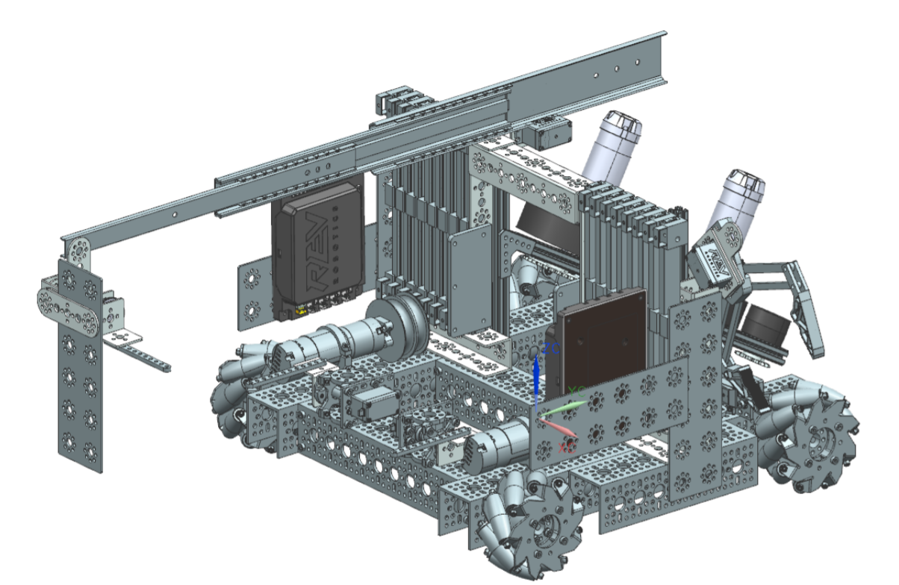

Education Through Innovation
We are the infO(1)Robotics Team – RO 140 - from “Ion Luca Caragiale” High - School, Ploiesti, Romania. Our team started its actions on April 2018, and it is coordinated by our main mentor Daniela Lica, a Computer – Programming teacher. Our team is composed of 15 members and 36 volunteers and each of them is currently working in the STEM fields with extracurricular activities which fit their sub-teams. Our team started with no budget and has been gradually building up its financial resources.
infO(1)Robotics is currently participating for the second time at FIRST Tech Challenge and expects to consolidate the knowledge accumulated over the course of the first year. At the Regionals competition, we were awarded with the 2nd place of Inspire Award, but also with the title of the 2nd pick in the Winning Alliance. We qualified as the 3rd team to the National Stage at which we won the 2nd place of the Control Award.
We combine work and pleasure, we always train hard but in an enjoyable way. By sharing opinions and learning about team work, we believe we can get creative enough to someday find a revolutionary and feasible idea of a robot that could unbelievably save humanity in its own way.
infO(1)Robotics is currently participating for the second time at FIRST Tech Challenge and expects to consolidate the knowledge accumulated over the course of the first year. At the Regionals competition, we were awarded with the 2nd place of Inspire Award, but also with the title of the 2nd pick in the Winning Alliance. We qualified as the 3rd team to the National Stage at which we won the 2nd place of the Control Award.